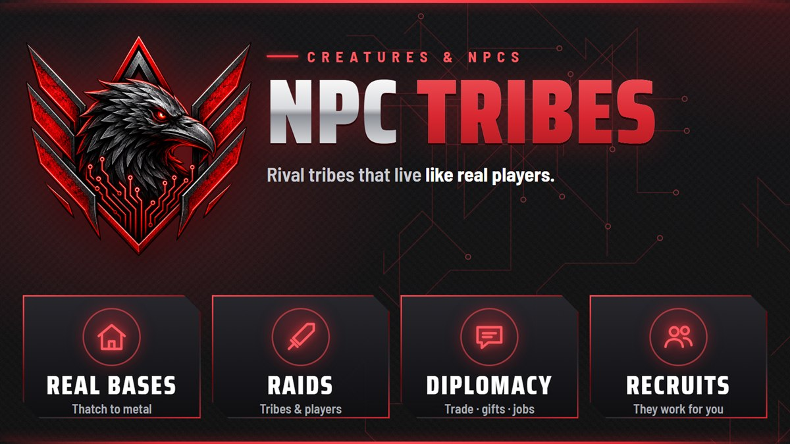
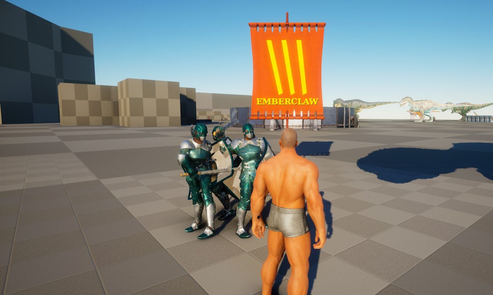
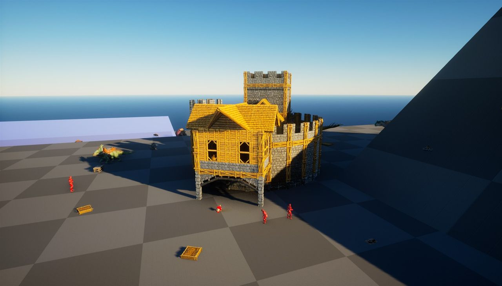
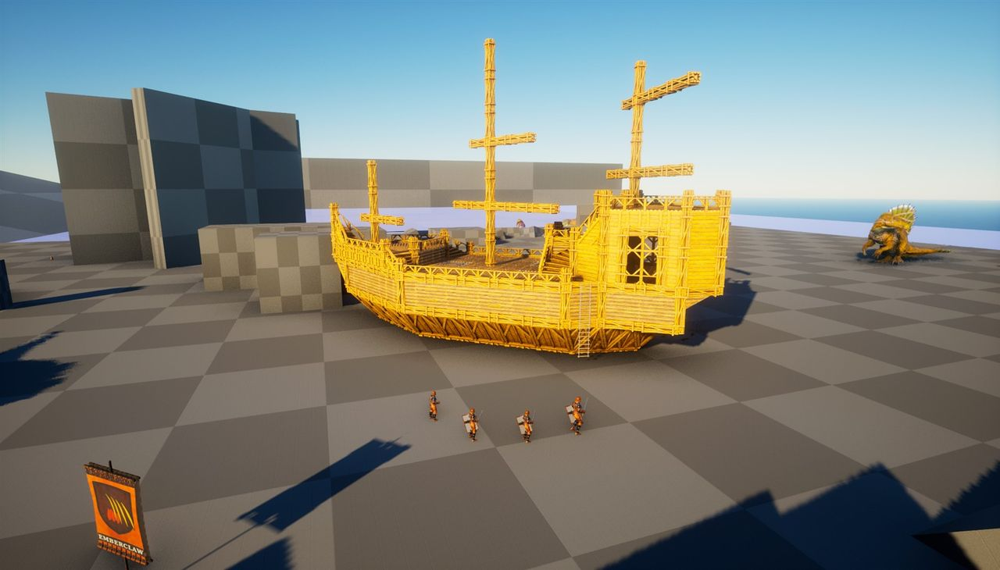
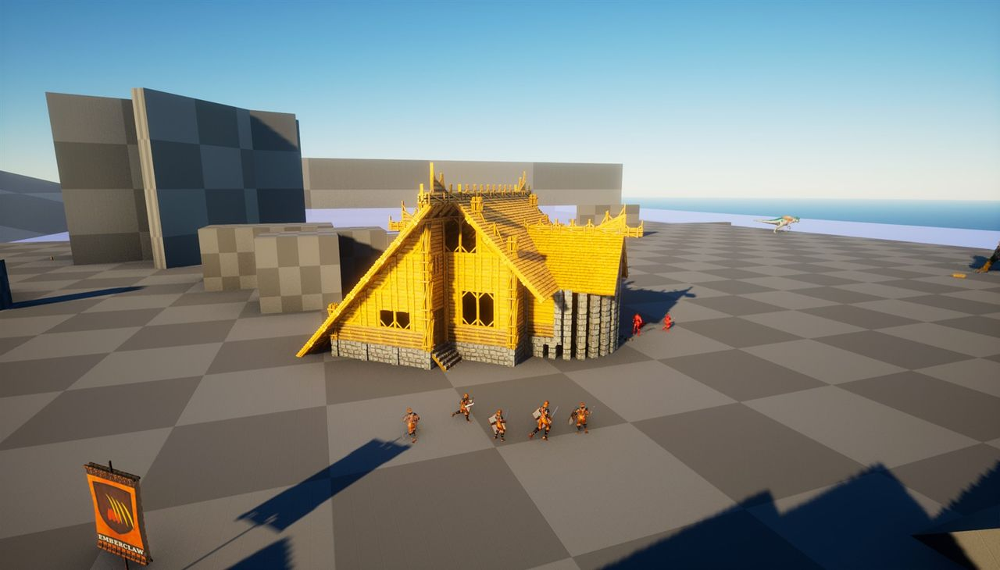
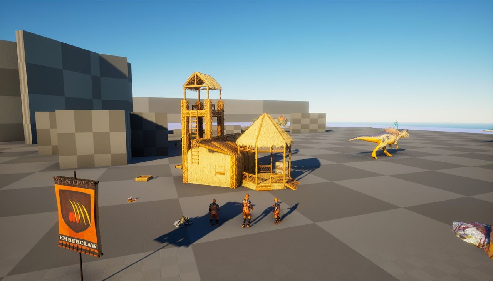
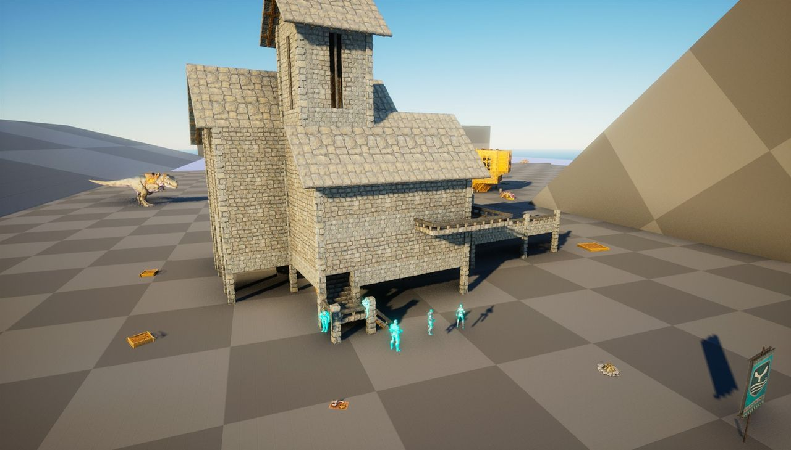

BLACKWIRE
BLACKWIRE
BLACKWIRE
BLACKWIRE
Rival NPC tribes that live on your map like real players: they build bases, tame, raid and trade, and remember how you treat them.

Every 30 seconds each tribe gets an update: it grows, gains members, finds creatures, stocks loot and decides on raids.
| Default | |
|---|---|
| Tribes on the map | 4, plus 1 peaceful village |
| Where they settle | At least 250 m from each other and 80 m from any player base |
| Members | 3 to start, one more per base level, up to 10 |
| Base | Grows thatch, wood, stone, then metal: 6 updates per step |
| Raids | Every 8 updates once it has a wooden base, on bases within 250 m |
| Hunting | Every 3 updates, within 50 m of camp |
| Wars | May declare war on the nearest tribe every 40 updates, with a 5-minute countdown |
Every tribe is Raiders, Hunters, Traders or Mystics, and flies its own banner.
The tribe falls. Its camp stands for 60 minutes so you can loot it or claim it.
Three trader stalls for food, metal and hides. Offers change every day, and the traders buy from you too. Uses BlackWire Coins if the Shop mod is on.
A member knocks out a wild creature and tames it over 1 to 3 minutes. Kill the tamer, or tame it first, to steal it.
Admins hold Reload anywhere for one screen: cap tribe growth, turn guns off, set camp loot and pick the creatures they ride. One-tap Primitive preset.
Camps with no player within 300 m only grow, and no dino wipe is needed. The map holds up to 80 NPCs.






Ask in the NPC Tribes channel on the BlackWire Mods Discord.